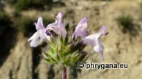
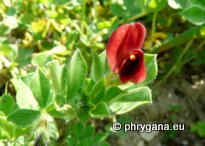
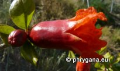

LESS.")
 CASS.")
 ROTH")
 MAIRE")


| PHRYGANA | Fauna | Flora | Galles | liste des espèces |
contact -
info - commentaires phrygana1 (at) gmail.com |
| Particularités crétoises | nouveautés | Mines | ressources naturelles |
| Les plantes alimentaires de Crète |
|
| Plantes récoltées, cueillies (τα χóρτα) et consommées crues, en salades | |||
|
|
|
|
|
| Carlina gummifera | Notobasis syriaca | Reichardia picroides | |
|
|
|
|
|
| Sinapis alba subsp. mairei | Borago officinalis | Oxalis pes-caprae | Eryngium campestre |
| Plantes récoltées, cueillies (τα χóρτα) et consommées cuites (à la vapeur ou bouillies ou sautées-rissolées, potages) | |||
|
|
 LAGR. FOSS.") |
 A. DC.") |
|
| Carlina gummifera | Hirschfeldia incana | Petromarula pinnata | Reichardia picroides |
 |
|
 GREUTER") |
|
| Scorzonera cretica | Sinapis alba subsp. mairei | Tragopogon porrifolius subsp. eriospermus | Borago officinalis |
 |
|
 |
 |
| Lotus edulis | Eryngium campestre | Amaranthus viridis | Parietaria judaica |
 |
|||
| Allium ampeloprasum | |||
| Plantes pour utilisations en confiserie et boissons | |||
 |
 |
||
| Pistacia lentiscus | Sambucus nigra | ||
| Plantes pour utilisations condimentaires | |||
|  |
|
||
| Satureja thymbra | Sinapis alba subsp. mairei | ||
| Plantes cultivées dans les jardins et vergers pour l'alimentation | |||
 |
 |  | |
| Vicia faba | Lotus tetragonolobus | Punica granatum | |
| 10 juin 2013 |
| © paul fontaine -- © Phrygana.eu 2007 -- 2013 |